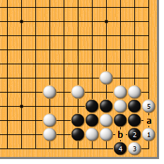
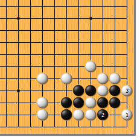
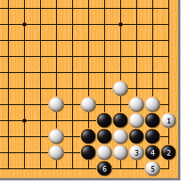
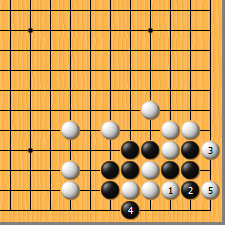
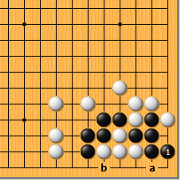
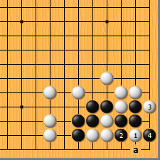

|  |  | |
| 图1 白1点，正解。黑2挡，为最佳应手。白3扳，黑4挡，白5求扳渡，结果成劫。黑4如于a位遮断，白b位打吃，同样是劫。 | 图2 白1扳时，黑2如单单紧住白三子的气，被白3扳，由于无法遮断，最终会成曲三而亡。
| |
|
|
 | |
图3 白1单扳如何？黑2如紧气，白3跳入，黑顿死，前面已经探讨过了。可哪有这么便宜的……
| 图4 白1扳时，黑2尖是绝妙手，请务必牢记在心！白3拐，黑4挡，白5再扳时，黑6也扳，白两面不入气，对杀黑胜。 | |
|
 |
 | |
图5 白1拐，试图弃子。黑2拐住，白3扳，黑如4位收气，白5跳夹，黑成丁四而亡。然而，黑哪有这样傻的？ | 图6 黑1单拐，妙！白如a位扳，黑就b位扳，刚才摆过了。1位是这个形状的要点，请好好体会。
| |
|  | 您的高见 | |
图7 白1靠，俟黑2冲后再于3位扳，确实是有些想法的。然而，黑有4位打的解困手段，白最终还是不行。当然，黑4不能打错方向，如于a位打，被白4位长，顿死。 |